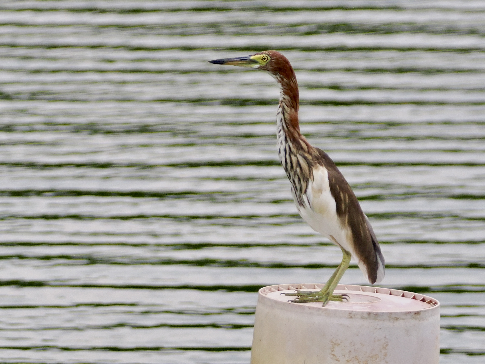
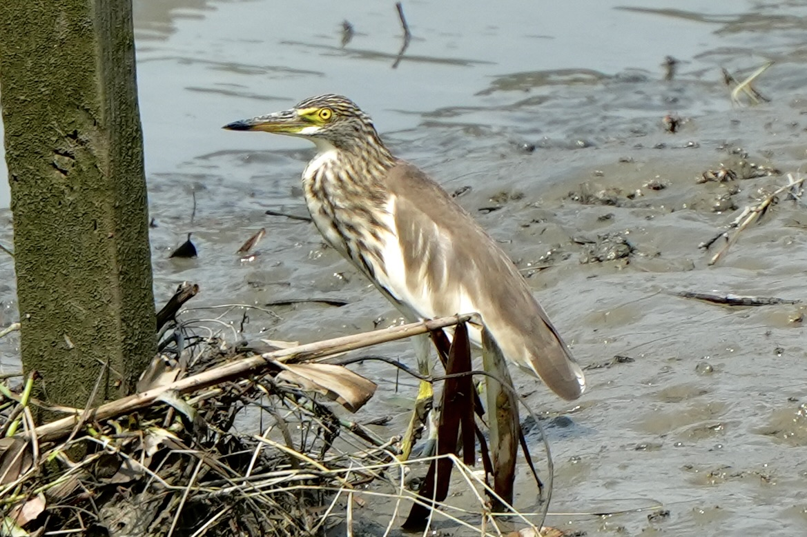

Chinese Pond-Heron
Ardeola bacchus
Order: Pelecaniformes
Family: Ardeidae

A small heron. In breeding plumage, has a chestnut neck and blue-black back, flowing plumes, and white wings. I feel like they prefer to perch on telephone wires more than other herons. Found in wetlands, rice paddies, and ponds.

A moulting individual, with striations on the neck.

Non-breeding plumage has a streaked brown neck and brown back, and white wings.